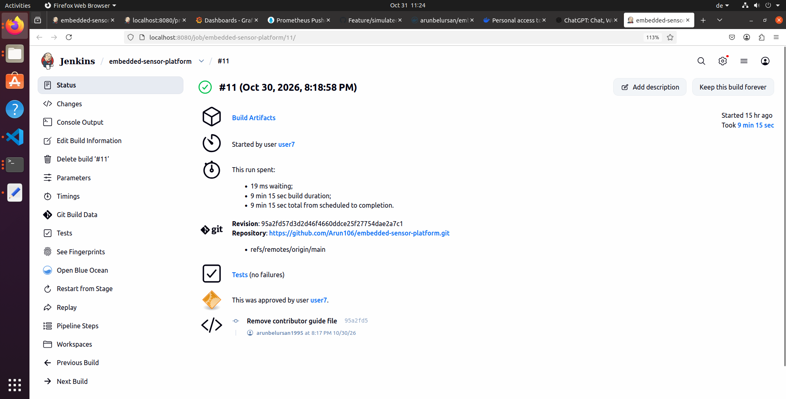
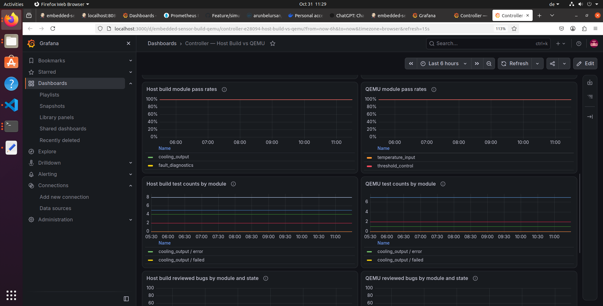

Temperature input
Sensor reading response and valid-range boundaries.
INDEPENDENT PROJECT · OCTOBER 2026
A thermal-controller delivery lab connecting automated tests, security checks and human approval to deployment on a QEMU virtual target.
Built by Arun Arun to demonstrate embedded test automation and CI/CD outside professional employment.
Counts describe the checked-in suite inventory, not a current Jenkins result or requirement-coverage score.
01 / THE RELEASE JOURNEY
Explore the pipeline in its configured order. The animation explains the workflow; it does not represent a live build.
Host and QEMU metrics publish in Jenkins post actions when reports exist and a Pushgateway URL is configured. A passing test gate alone does not prove activation succeeded.
02 / THE SYSTEM UNDER TEST
A one-shot C++ program accepts a temperature and threshold, reports a state and exposes its version. The five modules below describe logical verification areas within that application.
Sensor reading response and valid-range boundaries.
Configurable overheat threshold and invalid configuration rejection.
Software cooling request derived from NORMAL/OVERHEAT state.
Reject corrupt, nonfinite and out-of-range inputs.
Check that the candidate reports the expected release version.
A physical bench would add an ECU, sensor signal generation, electrical I/O, actuator loads and measured feedback.
QEMU provides a virtual execution target. It does not reproduce physical I/O, real-time timing or a complete HiL plant model. Cooling output here is a software request; no fan, PWM, relay or GPIO is driven.
Future extension · not implemented03 / RELEASE CONFIDENCE
Independent checks answer different questions. A percentage never overrides a critical failure or the vulnerability gate.
Strictly above 90% passed, every critical test passing, no execution errors, expected modules/framework reports present and minimum suite counts met. Skipped cases remain in the denominator.
Inspect host release policy ↗Trivy scans the runtime image for HIGH and CRITICAL vulnerabilities and blocks on findings. The JSON report is archived for inspection.
Inspect security stage ↗Jenkins pauses for manual approval. Source revision, image digest, checksums and reports support review. These controls demonstrate release discipline; no ISO 26262, ASPICE or regulatory certification is claimed.
Inspect approval stage ↗Docker Hub token binding, an SSH private-key credential and a known-hosts credential support authenticated delivery. The target runner enables strict SSH host-key checking. The lab approval step is not restricted to a named approver; production would also need restricted approvers, protected pipeline changes and isolated agents. Docker socket access carries host-administrator privileges.
Inspect SSH credential handling ↗04 / FEEDBACK AFTER THE RUN
Select Host build, QEMU target or Alert simulation. Inspect the overall pass rate, named module results, gate result, result age and reviewed bug counts.
Inspect module dashboard ↗Compare build verification with virtual-target verification. Synthetic alert results are excluded. Jenkins metrics provide pipeline outcomes and duration; measured build-time figures need a captured run.
Inspect comparison dashboard ↗Choose an example pass rate. The configured Prometheus rule warns below 95% for one minute. A firing rule needs Alertmanager routing to deliver notifications.
Illustrative snapshot: 96 passed out of 100 synthetic cases.
This website does not push metrics or trigger a real alert. Actual alert exercises use the repository publisher under target="qemu-simulation". Real test evidence remains separate.
Inspect alert rule ↗05 / INSPECT THE WORK
Repository artifacts explain what is configured. Runtime captures establish what actually ran.

The authenticated Jenkins view records the successful pipeline run used to publish the host and QEMU report artifacts.
Inspect pipeline definition ↗
The live dashboard queries Prometheus for the published host and QEMU results, including named module pass rates and test counts.
Read monitoring setup ↗06 / ENGINEERING LESSONS
Image builds progressed after using host networking for the affected automation images. This is a lab workaround; the broader Docker DNS/network configuration still deserves investigation.
The supplied run reported an OpenSSH/libcrypto key-loading error. The proposed correction was to preserve the complete private-key boundaries and line breaks in Jenkins credentials. A new run is needed to confirm the fix.
The reported target list had only Jenkins and Prometheus. Add the missing Pushgateway scrape job, validate the configuration and reload. Persist monitoring configuration outside a replaceable container.
WHAT THIS PROJECT DEMONSTRATES
Containerized build automation, test orchestration, failure triage, credential handling, release gates and observable results—supported by code that a technical interviewer can inspect.